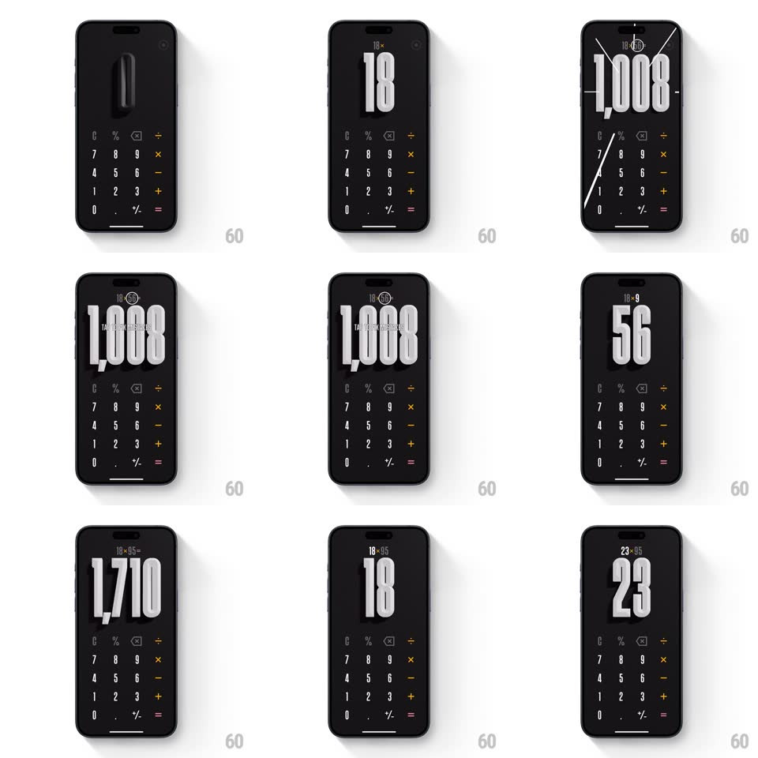

Media
Frame-by-frame

Rebuild this interaction 1:1: (Not Boring) Calculator - a black 3D calculator whose display digits are deeply extruded monoliths; every tap springs new digits in from the depths, results slam in at massive scale, and the running expression sits small above.

Rebuild this interaction 1:1: (Not Boring) Calculator - a black 3D calculator whose display digits are deeply extruded monoliths; every tap springs new digits in from the depths, results slam in at massive scale, and the running expression sits small above.
## Integration
Integration: stack-agnostic spec - springs given as stiffness/damping, timed motions as duration + curve; map every value to your framework and animation library of choice.
## Scene
Matte black: a huge 3D-extruded digit display filling the top half (extrusion visible in soft shadow), a small dim expression line above ("18 x 56"), and a minimal keypad below - thin white digits, orange operators, red "=".
## Motion spec
Pattern: tactile 3D digit springs.
- Digit tap: the new digit flies in from deep z-space (scale 2.4 -> 1 + translateZ, spring ~300/14 - a heavy, punchy arrival with a slight rotation settle) as existing digits shuffle left with their own micro-springs (spring ~380/20).
- The display's scale breathes with the digit count: 1-2 digits render enormous, shrinking in steps (spring ~340/18) as the number grows - the typography is the interface.
- Key press: the key's glyph depresses (translateZ -2px + brightness dip, 80ms) with a soft thock haptic; operators glow briefly in their accent color.
- Equals: the expression collapses upward (fade + 6px rise, 250ms) and the result SLAMS in (scale 3 -> 1, spring ~260/12 - the biggest bounce in the app, one deep wobble) with a shadow pulse under the digits.
- Clear: digits scatter downward and fade (200ms, slight random rotations) - erasing has drama too.
## Calibration
- Extrusion depth ~14px with a soft ambient shadow - the digits must read as objects, not flat type.
- Exactly one dominant scale per state - the display never competes with itself.
## Reduced motion
Digits crossfade; result fades at final scale.
## Don't miss
- The slam on equals - the result is a reward, animate it like one.
- Digits arrive from DEPTH, not from the side - the calculator is a tunnel, not a ticker.